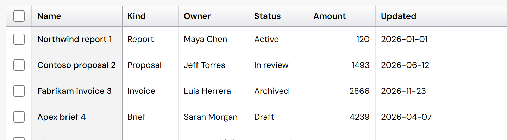
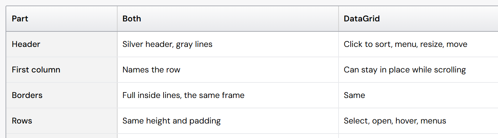
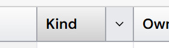
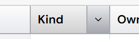
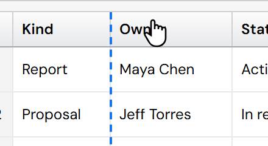
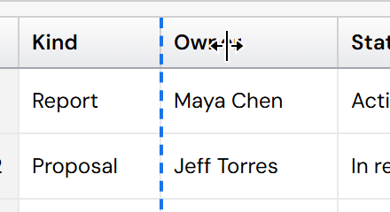

Grid and Table: the frame, the frozen line, the menu hover, the resize cursor
1 · Outer frame and the frozen first column's line
Today the outer frame is gray 300, the line under the headings gray 400, and the line after a frozen first column gray 200 like every inside line. You asked for the frame to match the heading line, and the frozen column's line to be darker. Existing colors only.




Suggestion: A. One dark line color for the frame, the heading line and the frozen edge: everything that holds the table together in one color, the inside lines lighter.
2 · The column menu part on hover
Hovering a column gives it the silver hover shade; hovering its menu part (the ⌄) switches that part to a flat gray, a different look.


Suggestion: the proposed shade, so the part reads as part of the column. (Or keep as is.)
3 · The resize cursor while dragging
Reproduced: when you drag a column's edge, the pointer soon leaves the thin grab area, and the cursor switches to whatever it is over (the column's grab hand), so the resize arrows seem to go "behind". Nothing keeps the resize cursor for the whole drag (DataGridEngine.jsx, startResize hands the drag to TanStack without it). At rest and on hover the grab area is on top, as it should be. The cursor is drawn in, since a screenshot cannot show it.


Fix: while a resize drag is on, the whole page shows the resize cursor and nothing else reacts to the pointer; it ends when you let go. PR #303 (the Explorer grab areas) does not cause this and does not fix it on its own.